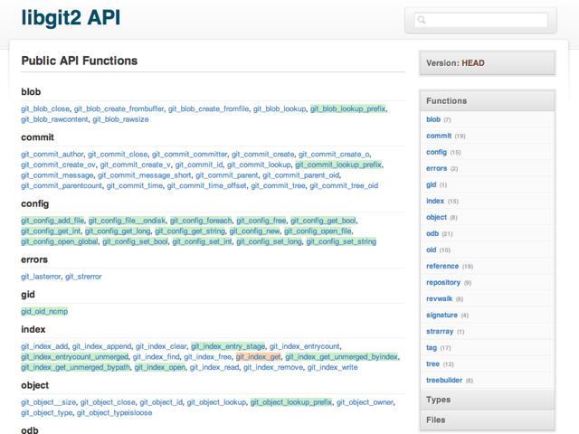
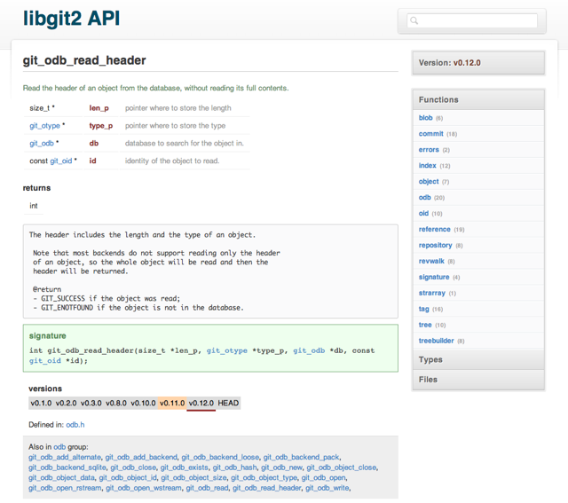

Latest commit to the master branch
| name | age | message | |
|---|---|---|---|
| |
bin/ | ||
| |
lib/ | ||
| |
site/ | ||
| |
test/ | ||
| |
.gitignore | ||
| |
Gemfile | ||
| |
LICENCE | ||
| |
README.md | ||
| |
TODO.txt | ||
| |
docurium.gemspec |
Docurium
Docurium is a lightweight Doxygen replacement. It generates static HTML from the header files of a C project. It is meant to be simple, easy to navigate and git-tag aware. It is only meant to document your public interface, so it only knows about your header files.
I built it to replace the Doxygen generated documentation for the libgit2 project, so I'm only currently testing it against that. So, it is only known to include support for features and keywords used in that project currently. If you have a C library project you try this on and something is amiss, please file an issue or better yet, a pull request.
Though Docurium can generate your docs into a subdirectory, it is meant to be served from a webserver, not locally. It uses XMLHttpRequest calls, which cannot be done locally, so you can't just open the index.html file locally and have it work - you need to either run a webserver in the output directory or push it to a website to view it properly. I use Pow (pow.cx) or GitHub Pages.
Usage
Run the cm binary and pass it your Docurium config file.
$ cm doc api.docurium
* generating docs
- processing version v0.1.0
- processing version v0.2.0
- processing version v0.3.0
- processing version v0.8.0
- processing version v0.10.0
- processing version v0.11.0
- processing version v0.12.0
- processing version HEAD
* checking your api
- unmatched params in
git_commit_create
git_config_set_int
git_object_lookup_prefix
- signature changes in
git_index_get
git_repository_path
git_tree_entry_byindex
* output html in docs/
Docurium will tell you if you have unmatched @params entries in header docs and if you've changed signatures in functions in HEAD, just to help you know what's happening and if you've written your docs properly.
The Docurium config file looks like this:
{
"name": "libgit2",
"github": "libgit2/libgit2",
"input": "include/git2",
"prefix": "git_",
"branch": "gh-pages",
"examples": "examples",
"legacy": {
"input": {"src/git": ["v0.1.0"],
"src/git2": ["v0.2.0", "v0.3.0"]}
}
}
You can either have a branch or an output entry - branch will write your docs directly into a Git branch, output will write them to a subdirectory.
Installing
$ gem install docurium
Screenshots
Main Page

Each version of your app has a landing page that lists out all the functions available. Functions that are new in that version from the previous version are highlighted in green, functions that have changed signatures are in orange.
Function Page

Each function has a page showing all the relevant info for that function including metadata extracted from Doxygen-style comments. I also list all the versions of the library that this function is included in and in which versions the signature changed.
Contributing
If you want to fix or change something, please fork on GitHub, push your change to a branch named after your change and send me a pull request.
License
MIT, see LICENCE file